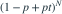

N~Pois(λ)，每次标记独立为Bernoulli(p)，并与N独立。前N个标记之和服从？
- APois(λp)
- BBin(λ,p)
- CPois(λ/p)
- DBernoulli(p)
我已思考，展开答案与解析
正确答案：A
- 条件母函数为

；对N取期望得exp{λp(t−1)}，是Pois(λp)的母函数。
易错提醒先明确分布参数、独立性和统计量的定义，再进行计算。
茆诗松教材知识点拓展 · 教材知识体系：多维随机变量；原创训练，非教材原题
原创专题题
查看参考来源

；对N取期望得exp{λp(t−1)}，是Pois(λp)的母函数。茆诗松教材知识点拓展 · 教材知识体系：多维随机变量；原创训练，非教材原题
原创专题题
查看参考来源